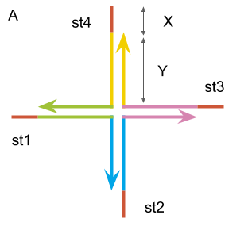
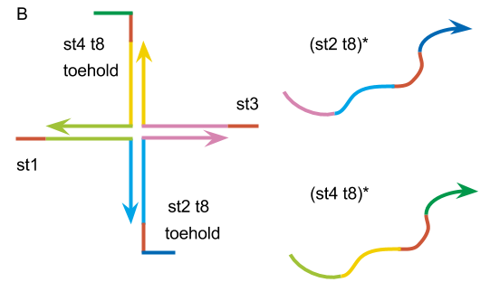
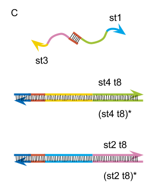
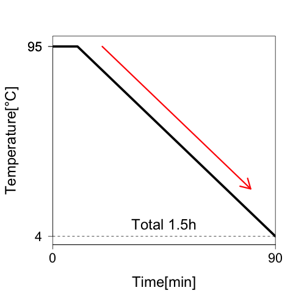
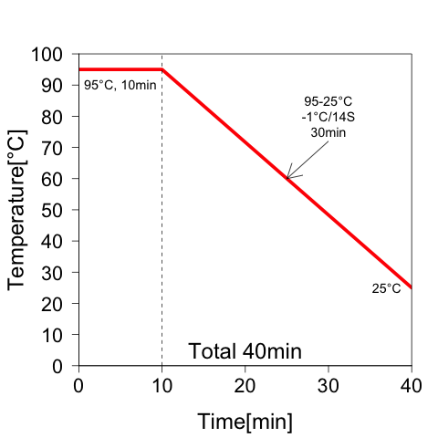
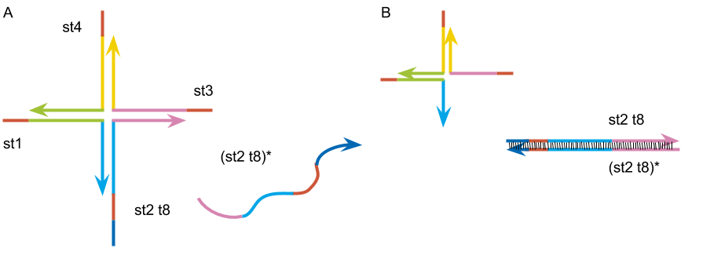

Protocol
Design of the DNA hydrogel



st1: 5’- TGGATCCAGTTTGTTATCGCAGGAGCGTCGGTATTCAAA -3’
st2: 5’- TGGATCCAGTTTGAATACCGACGCCACGACCTAATCTTA -3’
st3: 5’- TGGATCCAGTAAGATTAGGTCGTGATGGTGAAATGTAAA -3’
st4: 5’- TGGATCCAGTTTACATTTCACCATTCCTGCGATAACAAA -3’
st2 t8: 5’- CACTCTTCTGGATCCAGTTTGAATACCGACGCCACGACCTAATCTTA -3’
(st2 t8)*: 5’- TAAGATTAGGTCGTGGCGTCGGTATTCAAACTGGATCCAGAAGAGTG -3’
st4 t8: 5’- CACTCTTCTGAATCCAGTTTACATTTCACCATTCCTGCGATAACAAA -3’
(st4 t8)*: 5’- TTTGTTATCGCAGGAATGGTGAAATGTAAACTGGATCCAGAAGAGTG -3’
Fig.3: (A)基本となるゲルの構造の模式図。(B)st1, st2 t8, st3, st4 t8で作るゲルの構造とst2 t8, st4 t8に相補的な配列の模式図。(C)Annealing後に期待されるDNA配列の結合様式の模式図。
1, Experiment to see the gel is formed
参考文献と同じ条件でgelが形成されるか確かめる実験を行なった。
Mix
| control | gel | |
|---|---|---|
| TE(pH 8.0)* | 1x | 1x |
| NaCl | 50 mM | 50 mM |
| DNA strands | 0 μM | 200 μM |
PCR
Annealingの条件は、下の図にまとめた。

Fig.4: Annealing condition. 95°Cから25°Cまで1.5h、温度を下げていった。
2, Experiment to find the optimal DNA concentration
ゲルを作成するときに適切なDNA濃度を決める実験を行なった。
Mix
| Tube1 | Tube2 | Tube3 | Tube4 | |
|---|---|---|---|---|
| TE(pH 8.0) | 1x | 1x | 1x | 1x |
| NaCl | 50 mM | 50 mM | 50 mM | 50 mM |
| DNA strands | 0 μM | 50 μM | 75 μM | 100 μM |
PCR
3,Experiments to check the state of gel by changing combination of sequences
DNA配列の組み合わせで、ゲルの状態がどうなるか確かめる実験を行なった。
Table.3: DNA配列の組み合わせをまとめた表。PCR後に期待される配列の結合を図に示した。

Mix
| Solution | Final concentration |
|---|---|
| TE(pH 8.0) | 1x |
| DNA strands | 100 μM |
| NaCl | 50 mM |
Annealing condition
溶液を混ぜたあと、アニーリングは次のような条件で行なった。

Fig.5: Annealing condition. 95°Cで10min denaturation後、25°Cまで14秒ごとに1°C温度を下げていった。
4, Experiments to check the state of gel by adding complementary strand of st2 t8 and st4 t8
4-1, only st2 t8
DNA配列を延長し、相補的な配列を入れてゲルの形成を阻害したときの状態を確かめる実験を行なった。まずは、st2 t8と相補的な(st2 t8)*を加えた条件で実験を行なった。
Fig.6: (A)st1、st2 t8、st3、st4で作成するゲルの模式図。(B)Annealing後、st2 t8と相補的な(st2 t8)*が結合したときにできると期待される構造の模式図。
Mix
| Solution | Final concentration |
|---|---|
| TE(pH 8.0) | 1x |
| DNA strands | 100 μM |
| Complementary strand | 200 μM |
| NaCl | 50 mM |
Annealing condition
PCRは、実験3と同じ条件(Fig2)で行なった。
4-2, st2 t8 and st4 t8
次に、st2 t8と相補的な(st2 t8)*に加えてst4 t8と相補的な(st4 t8)*を用いてゲルが形成されるか確かめた。

Fig.7: (A)st1、st2 t8、st3、st4 t8で作成するゲルの模式図。(B)Annealing後、st2 t8と(st2 t8)*、st4 t8と(st4 t8)*が結合したときにできると期待される構造の模式図。
Mix
| Solution | Final concentration |
|---|---|
| TE(pH 8.0) | 1x |
| DNA strands | 100 μM |
| Complementary strand | 200 μM |
Annealing condition
PCRは、実験3と同じ条件(Fig4)で行なった。
Material
TE(pH 8.0): Ambion社
10 mM Tris pH8.0
1 mM EPTA pH8.0
0.2 μm filtered
DNA strands: Integrated DNA Technologies社
Equipment
Rotor Gene™ Q Real-Time Rotary Analyzer: QIAGEN社
T319-4N 0.1 ml Tube and Cap Strips for Qiagen Rotor-Gene™ Q Real-Time Rotary Analyzer: QIAGEN社
reference
[1] Kandatsu, D. et al. “Reversible Gel-Sol Transition of a Photo-Responsive DNA Gel.” Chem Bio Chem 17, 2016, 1118-1121